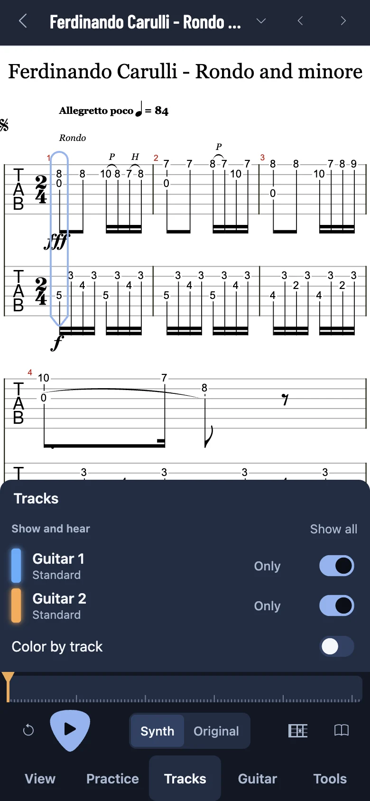

Everything in one practice loop
Read
- All guitars at once
- Guitar Pro, PDF and text tabs
- Scroll or page layout
- 7 and 8 string tabs
- Line cursor
- Sheet paper and size
- Remembers your tracks
Every guitar part on one page, in the layout you like.
Hear
- Built-in synth
- Per-track mixer
- Speed and loop
- Metronome and count-in
- 10-second rewind
- YouTube backing tracks
- Latency calibration
- Your own SoundFonts
The synth works offline, and your own recording can lead.
See
- Fretboard follows playback
- A color for each track
- Left-handed view
- Tuning and capo
Follow each note on the neck.
Play together
- Jam on your network
- Join by QR code
- Any song type
- Assign tracks
- Control the audio
Everyone on the same song, at the same spot.
Library
- Artists and albums
- Music metadata
- Custom collections
- Search and recents
- Setlists
- Bulk PDF export
- One-file backup
Your songs, with your tabs linked.
Tools
- Chord library
- Scales
- Circle of fifths
- Tuner
- Pedal and gamepad page turns
- Cloud backup and sync
Everything a practice session reaches for.


One reader, five buttons
View
Layout, notation, size, paper and the pages shown. Scroll or page mode, tab only or tab with standard notation, a light or dark sheet.
Practice
Speed from 50% to 125%, the loop range, the metronome and a count-in. Learn a solo slowly, then bring it up to tempo.
Tracks
Which tracks to show and hear, their levels and their color. Switch to one guitar, or to everything but the guitars.
Guitar
Strings, tuning and capo for the guitar in your hands. It resets when the song closes, and is saved for the song, or as your usual guitar, only when you ask.
Tools
The chord library, scales, the circle of fifths, a fretboard, a tuner and a metronome, one tap from the score.
From file to first note
To begin, drop in a tab. Open Guitar Pro, PDF or text files from your device, then link each one to its song. MajesticTab fills in the artist, album, cover and tuning.

Then, press play. The cursor follows the music, the fretboard lights up each note, and every guitar part sits on the page together.
When it gets hard, slow it down. Drop to half speed, loop the bars you are stuck on and turn on the metronome, then speed up as you improve.

With friends, jam on the same page. One player hosts on the local network, the others join with a QR code, and everyone sees the same song at the same spot.
The short version
- 7
- devices it runs on: iPhone, iPad, Mac, Windows, Android, Linux and Steam Deck.
- 3
- kinds of tab file: Guitar Pro, PDF and text.
- 8
- strings at most, with 7 and 8 string tabs and tunings.
- 9
- app themes, each with a light or dark sheet.
- 0
- ads, accounts or subscriptions.

Every featurecosts $0
There is no paid tier, no trial clock and no ad. Your tabs and settings are always yours, and MajesticTab never expires.
- Guitar Pro, PDF and text tabs, with your whole library
- Multi-track playback, mixer, speed control and YouTube backing tracks
- Fretboard, tuner, chord library and Jam sessions
- Every theme, setlists, custom SoundFonts and bulk PDF export
- Backup and sync with Google Drive, S3 or iCloud
Questions
Is it really free?
Yes. Every feature is free: no paid tier, no subscription, no ads and no trial clock. The code is open source on GitHub.
Does it work offline?
Yes. It is a native app, and the built-in synth plays tabs with no connection. YouTube backing tracks, web search and cloud sync need internet, and you choose whether to use them.
Which files can I open?
Guitar Pro files (.gp, .gp3 to .gp5, .gpx), PDFs and text tabs, from your device or from Google Drive, S3 or iCloud.
Where are my tabs kept?
On your device, unless you choose to back them up or sync them. One .mtbackup file holds your library, settings and SoundFonts, so moving to a new device takes one restore.
Can I jam with friends?
Yes, on the same network. Anyone can join a Jam for free. Hosting needs a native app, and it is a feature in the App Store, Google Play and Microsoft Store versions.
Does it run on my device?
iPhone, iPad, Mac, Windows, Android, Linux and Steam Deck. Downloads are below, with the store listings that are open today.
Let thescore lead.
Free for every device you play on, with every feature included.
Get MajesticTab